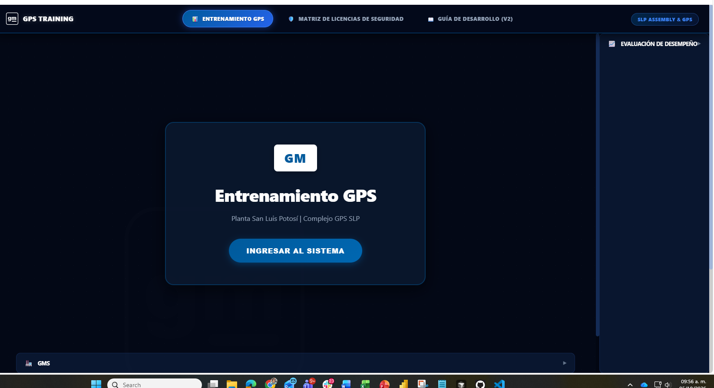

Descripción
¿Qué hace el agente?
Plataforma de entrenamientos para capturar los cursos que lleva el personal y sus credenciales de forma más rápida, unificando las bases que hoy están en Excel.
- Captura ágil de entrenamientos y credenciales del personal de GPS SLP.
- Unificación de las bases de datos que actualmente se manejan en Excel.
- Aplicación para disminuir el trabajo de análisis de múltiples tablas.
- Encargada: Erika Edith Rodríguez Almanza.
- Inicio en octubre de 2026 con término estimado en noviembre de 2026 (2 meses).
Vistas de la plataforma
Galería
